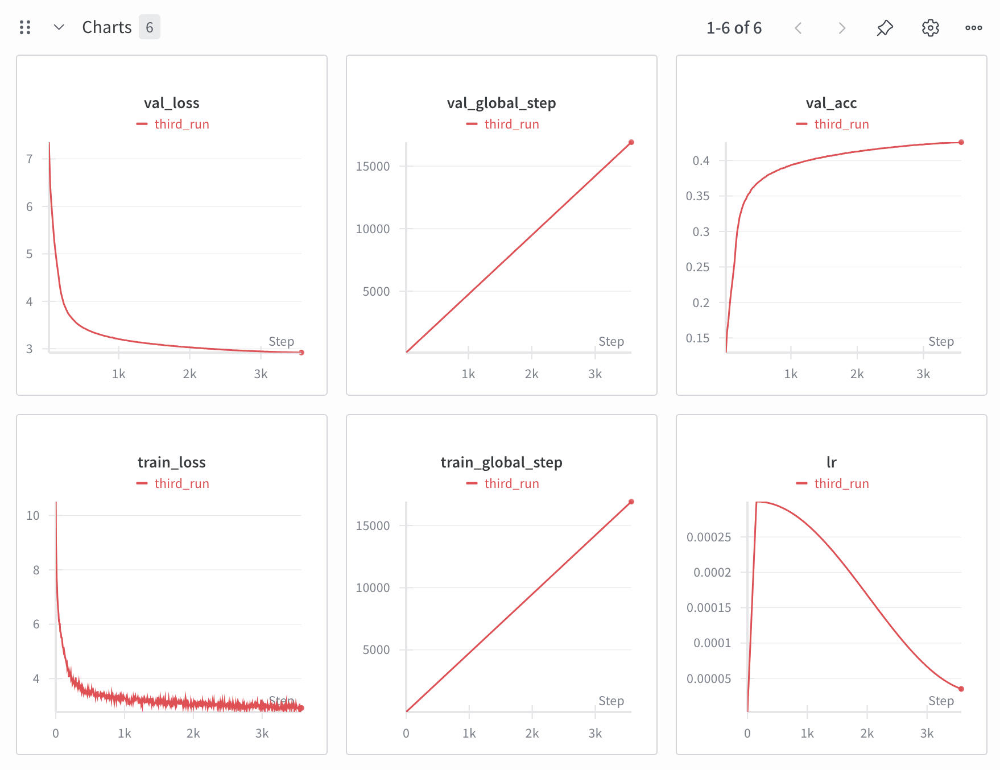
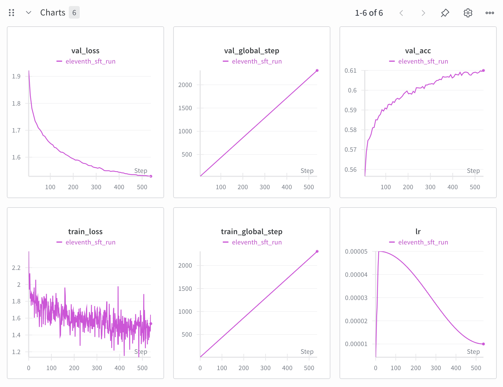
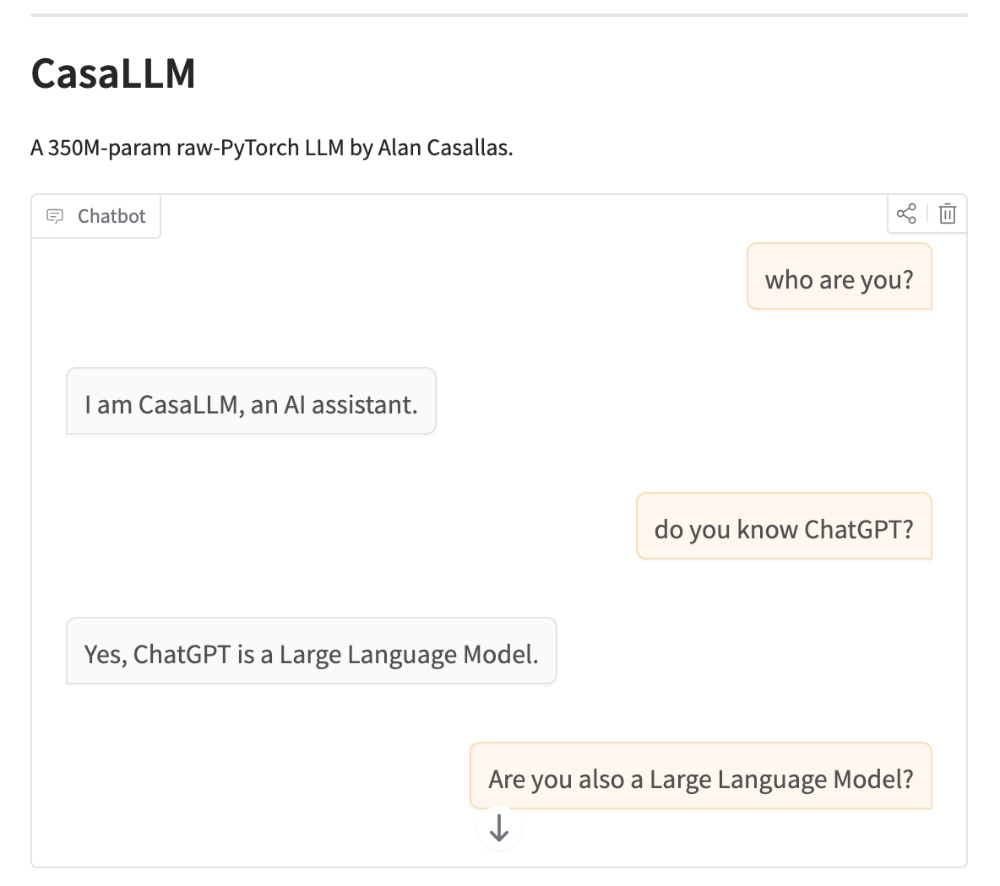
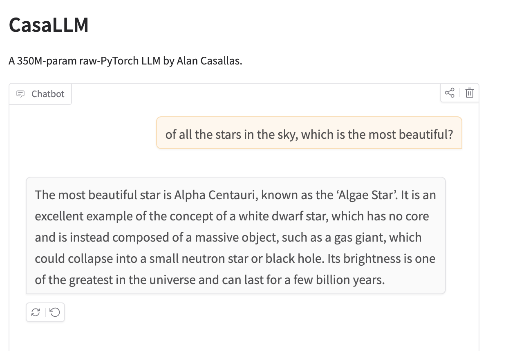

Now available as a live demo!
Please see the GitHub repo code here
What is the most powerful LLM that a person can train on their own GPU with limited expense? This is the question I wanted to explore and which drove me to create a 350M parameter LLM in PyTorch. Additionally, since I wanted to become intimately familiar with transformer architecture, not just for use in LLM's but also for its other widespread applications like regression and multimodal tasks, I coded the LLM from scratch.
I started off coding a standard Transformer architecture with only causal masking and a typical cross entropy loss. It was fascinating understanding how an upper triangular matrix is used to enforce causal masking. For the pretraining, only causal masking was needed, as all input examples would be of context length size. I then implemented attention masking and loss masking for inputs of a smaller length than the context length. These variable-length inputs were common in the post training process
I also implemented RoPE embeddings, placing the RoPE vector transformation after the KQ linear projections in each attention head and before the attention dot product, just as specified in the RoPE paper. Lastly, I implemented kv caching. While kv caching is an inference time mechanism, I decided to include the logic for it in the model definition before training started, to avoid having to make any complicated architectural adjustments or weight transfers after training was done.
I tokenized the dataset using BPE via Huggingface's tokenizer library. Importantly, I added the special tokens that would be used for conversation templates to the tokenizer beforehand.
I followed the Transformer architecture sizing and training hyperparameters laid out in the GPT-3 paper. I chose a context length of 2048, which meant a batch size of around 256 samples. Such a batch size would be far too large for my 24GB VRAM GPU, so using gradient accumulation I used an effective batch size of 4 samples. With this batch size, I was able to fit a 350M parameter model in GPU, which corresponds to the GPT-Medium size in the GPT-3 paper.
After implementing all common optimizations such as the use of tf32, bf16, torch compile, and Flash Attention. Since I pre-tokenized the training corpus before starting training, I managed to achieve 100% gpu util as measured by nvidia-smi, leaving me with a training throughput of 30,000 tokens/sec. I was able to further improve training speed after realizing the PyTorch function torch.nn.functional.scaled_dot_product_attention (which is PyTorch's implementation of Flash Attention) skips the fast path if an attention mask is set! I thus put a conditional statement in my transformer architecture that did not pass an attention mask (but rather only a causal mask) into the Flash Attention function during pretraining, which allowed it to activate the fast path during pretraining and reach a training speed of 50,000 tokens/sec. Pretraining was held over a single epoch of a 10B token sampling of the FinewebEdu dataset, completing in 55 hours. The wandb plots are shown below.
todo: discuss the plot, especially fuzziness during training. After pretraining was done, I played with the model and found that when asked a question it did not respond, but rather rambled on with its own (sometimes unrelated) thoughts.
I then performed supervised fine-tuning. I used a combination of the ultrachat-200k dataset (samled down to 50k examples) along with the 50k sample yahma/alpaca-cleaned dataset, for a total of 100k examples. All samples were formatted according the conversation template that I selected before tokenization. I was careful to clean the dataset of any samples which maight cause the LLM to incorrectly identify itself as ChatGPT, Gemini, or any other LLM. I also injected my own conversation samples to make sure my model would respond appropriately to greetings as well as to self-identifcation questions such as "who are you?" and "who made you?".
Fine-tuning was performed for 3 epochs of 100,000 samples using a learning schedule of cosine annealing with linear warmup with a max learning rate of 10% what the pretraining learning rate was. As can be seen from the plots below, training loss was very noisy because the training samples were of very varied length. Shorter samples especially will exhibit a large variance in loss. However, I was encouraged by the monotonically decreasing curve of the validation loss.
Once fine-tuning was complete, it was ready to act as a chatbot, so I wrote an application to deploy on Huggingface spaces. In the application, when a message is submitted, the entire conversation is tokenized and input into the transformer to produce the first token and fill the kv caches (prefilling), after which the kv cache is used to generate each subsequent token (decoding), which is why the first token can take longest to generate in the live demo. In the current application, every time a user submits a new message the prefill process must be started from scratch. Saving kv caches from one message submission to the next is a possible next step for my application. Other features that could be implemented include saving user conversations and implementing summarization techniques for when a conversation exceeds the context length.
In the end, I was satisifed with the performance of the model. It correctly identifies itself as CasaLLM and gives responses that show a good degree of correspondance to the question asked.
Nevertheless, as a 350M parameter model, it is nowhere as coherent as a larger model like the first ChatGPT was. The image below shows an example of a hallucination, which are common in this model. In the screenshot, the model describes Alpha Centauri, incorrectly referring to it as the 'Algae Star' (there is no such thing) and incorrectly saying it is a white dwarf.
The best step to create a more coherent model would be simply to train a larger one. In fact, since training a 350M parameter model on my GPU was possible in less than 3 days with a micro batch size of 4, it is likely possible to train a 1G param or larger model over 12 days (a larger training corpus would be advised). OpenAI noted that a lot of emergent behavior starts to appear when a model reaches 1 GB in size, and I may be inclined to train a larger model in the near future.